Gallery
Notebook pages, alphabets and grammar sheets grouped by language. Select a page to see it larger.
Language family tree
A hand-drawn tree connecting many of the languages below (filed as “TAOARI vocabulary tree”; Taoari is one branch near the top).

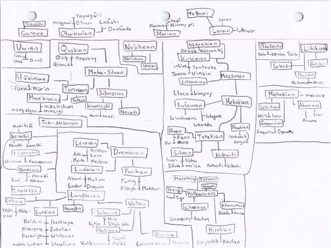
Łunevrian

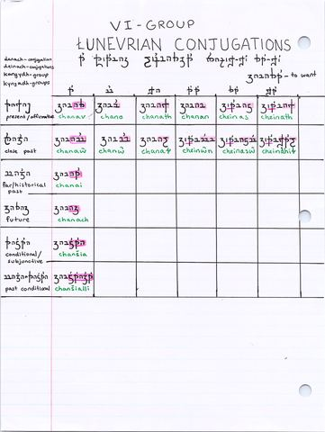

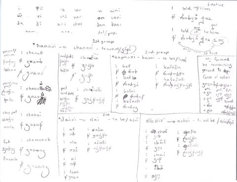

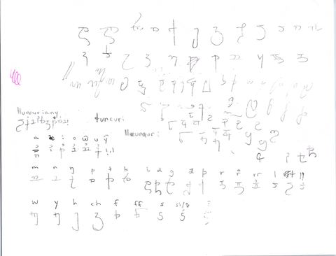
Merla

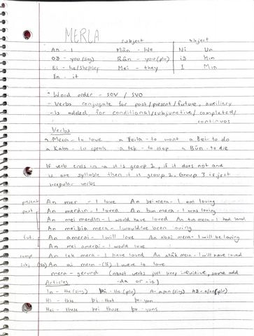

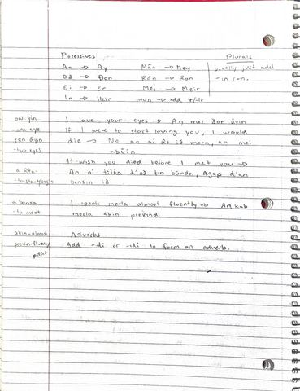
Ikusi

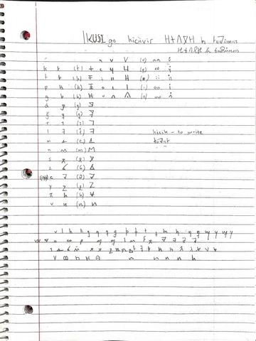

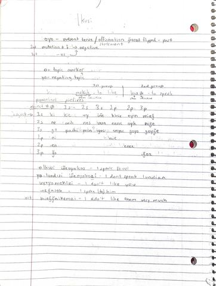
Miikvavis
The page is labelled “Family: Kusikan”, so it is probably related to Ikusi.

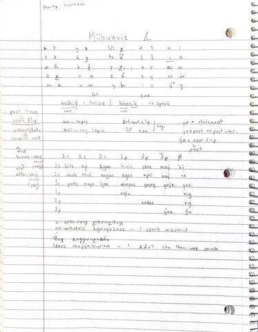
Šhrüm

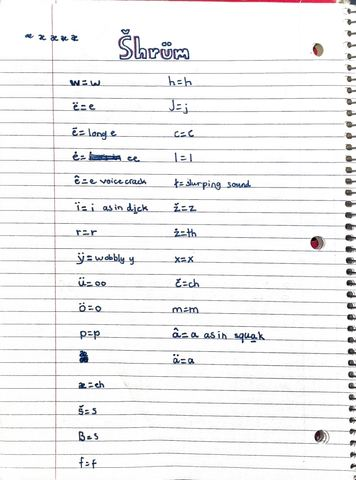

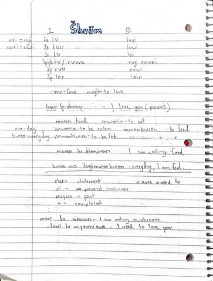

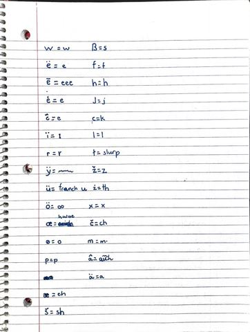
Ganeva

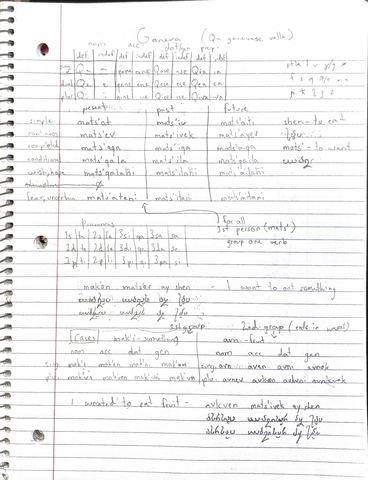

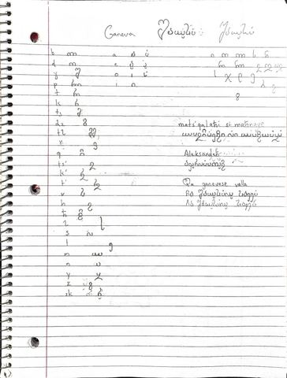
Néyak'aj

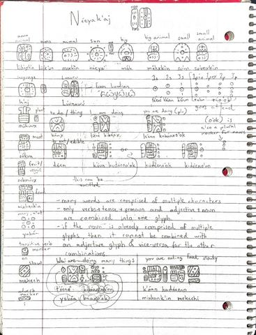

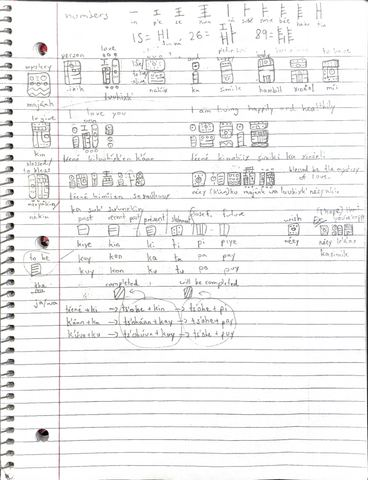
Lānar

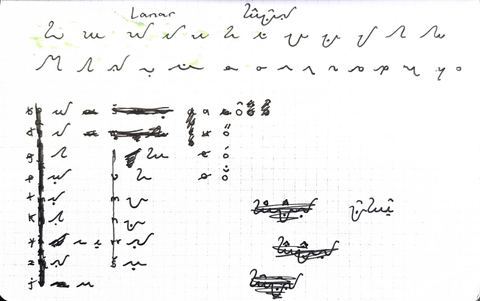

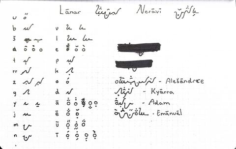
Lehiti

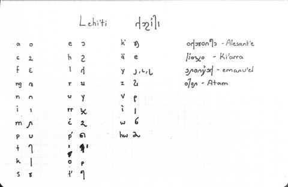
Lloranija

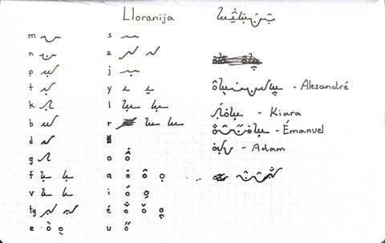
Mürin

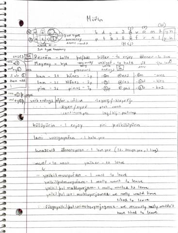
Oluwi

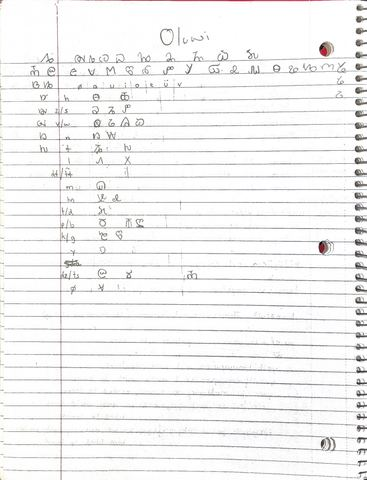
Snoqwit

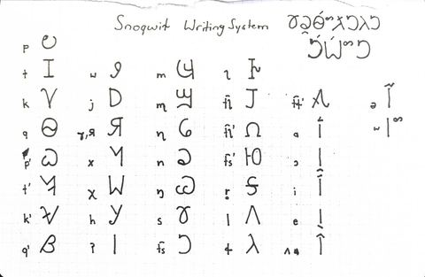
Svnbâ

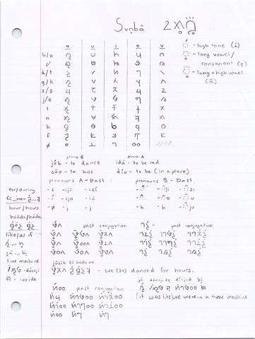
Ŧinuryani

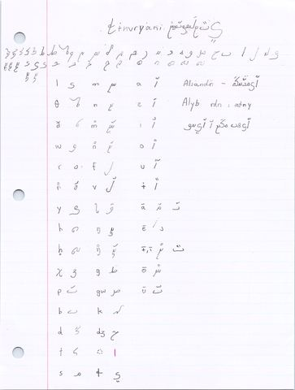
Duxæ
Titled “Inæ Ðuxæ” (the Duxæ language) with a name in the language’s own script beside it (filed as “GUIMAI”).

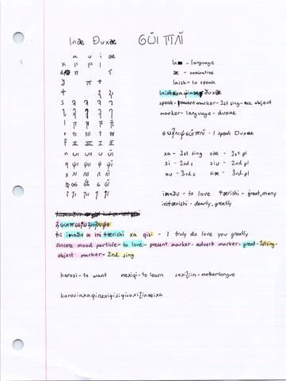
Luthivir

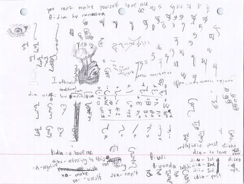
Tayoni
No title is written on the page; the name comes from the file name.

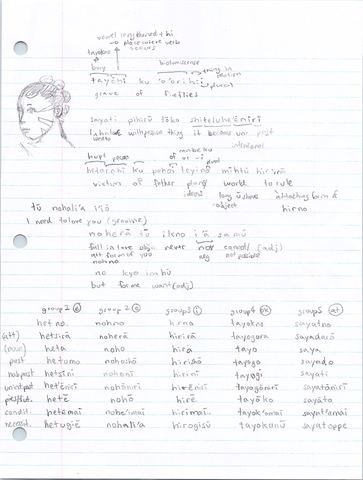
Lomoz Almo
The title is in an invented script; the name comes from the file name.

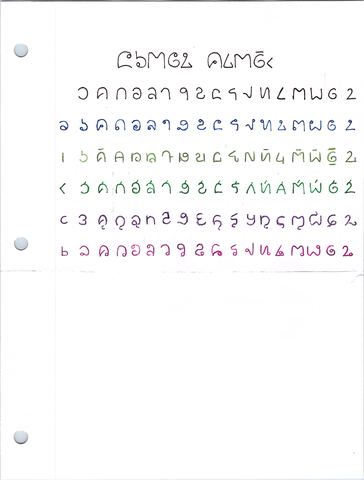
Rounded cursive script
Several pages share one rounded cursive script whose name isn’t written in Latin letters.

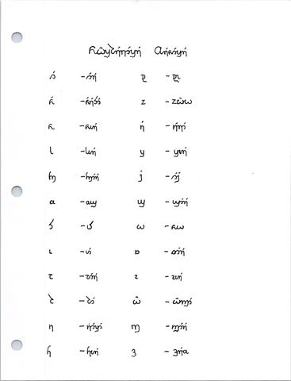

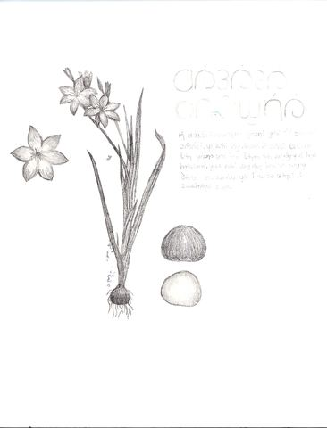

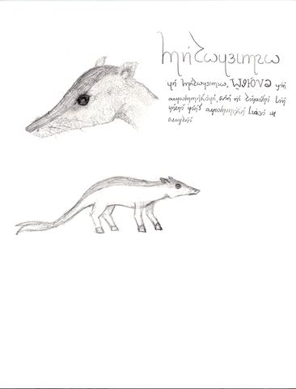

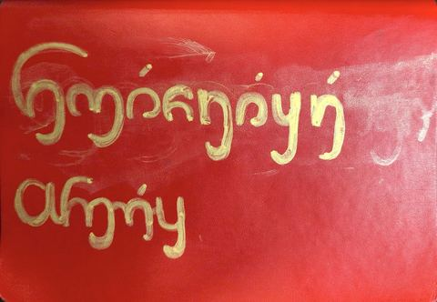
Angular alphabet
Two versions of one alphabet; the title is in an invented script.

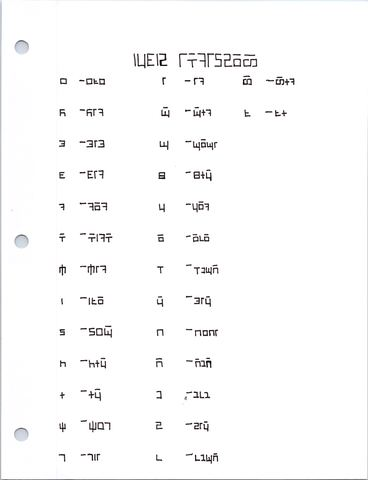

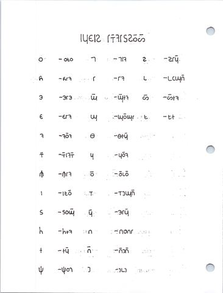
Nimalos
Creature names and a family tree of animals.

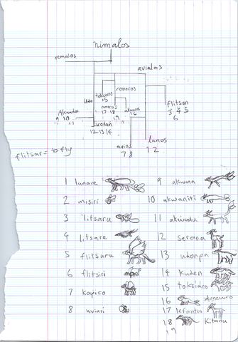
Places and drawings

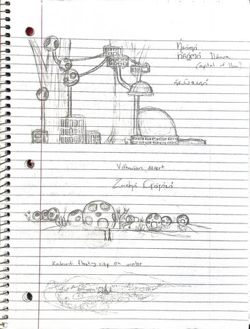

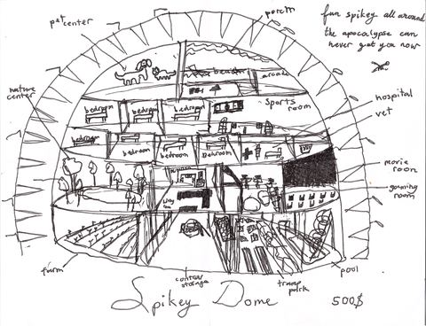
Unsorted
Pages whose language name isn’t clear yet.

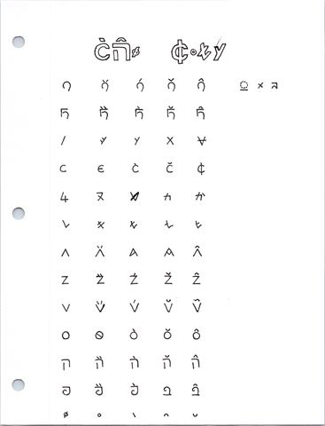

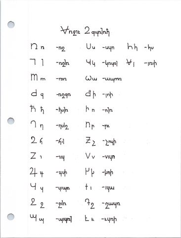

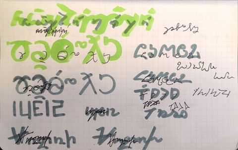

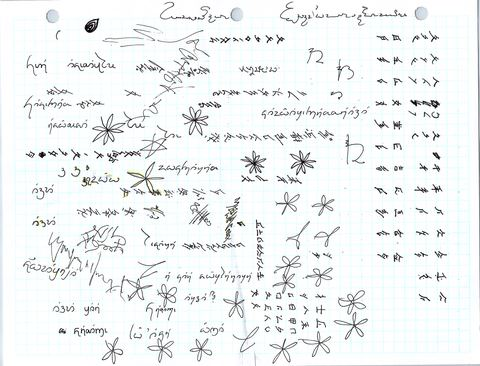